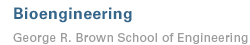
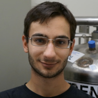
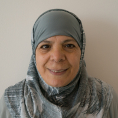
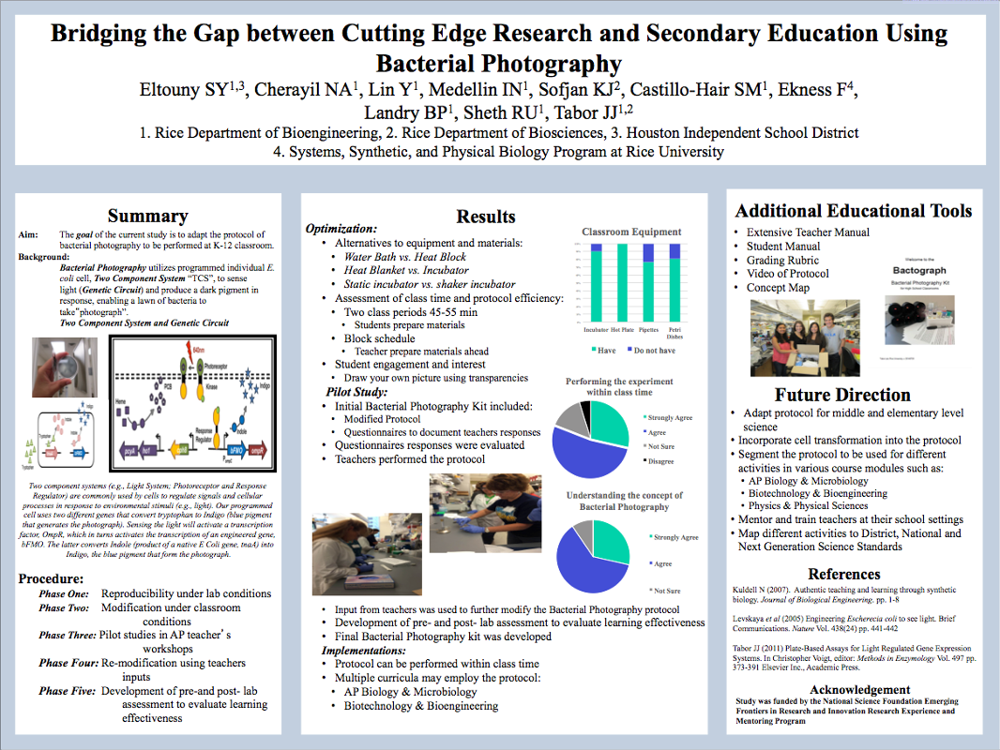
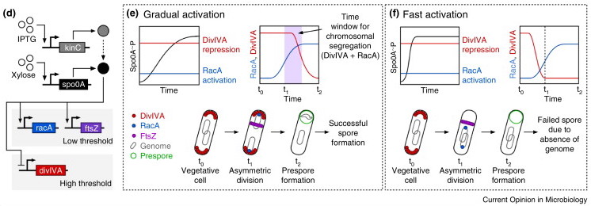
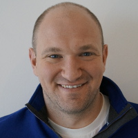

News
Synthetic Biology in Space
Lucas Hartsough, a NASA Space Technology Research Fellow, penned a great PLOS article on the motivation for developing synthetic biological systems as tools for space exploration. You can find the article here.
John S. Dunn Foundation Collaborative Research Award
We have received a 2015 Collaborative Research Award from The John S. Dunn Foundation with collaborator Meng Wang at Baylor College of Medicine! This grant will support our work to combine optogenetics with microbiome engineering to study an exciting new pathway that Dr. Wang discovered that increases longevity in the nematode C. elegans. You can read Rice's offical statement on the award here.
Optogentically-Controlled AAV Gene Delivery
Our paper with Junghae Suh's group on engineering the first optogenetically-controlled Adeno Associated Virus for light-regulated gene delivery to mammalian cells was just published in ACS Nano!

Ravi wins Best Bioengineering Senior Award!
Ravi received another highly prestigious award today, as the Rice Department of Bioengineering named him the best Senior of the 2015 graduating class. This is a great honor as Rice Bioengineering students are an exceptional bunch with a long history of going on to do great things in Bioengineering-related areas. This award speaks to Ravi's success in the lab as well as the tremendous impact he's made on the other students and faculty in the department.


Ravi Wins Hertz Fellowship Award
Our own Ravi Sheth has just been awarded a 2015 Hertz Fellowship!! The Hertz is the most prestigious science and engineering fellowship awarded to U.S. PhD students, and provides over $250,000 in support for graduate studies. Ravi is one of 12 fellows to be selected out of over 700 top tier applicants for this award. Since 1963, the Hertz Foundation has awarded 1,100 fellowships with Hertz fellows having attained 2 nobel prizes in physics, 3,000 patents, 400 tenure track faculty positions and much more. Great job Ravi, we look forward to what you accomplish next.
Kenny and Nikola Win RURS Prizes
Congratulations to Kenny Groszman and Nikola Dyulgyarov for winning best posters within their respective groups at The Rice Undergraduate Research Symposium (RURS). At RURS, Over 190 Rice undergraduates from all disciplines showcase their research to a panel of judges comprised of faculty, community leaders, and graduate students. Kenny won the top prize in the School of Engineering (solo category) while Nikola won the Howard Hughes Medical Institute prize.

Kenny Wins Barry Goldwater Scholarship
Kenny Groszman has won the prestigious Barry Goldwater Scholarship through his research in using frequency analysis to characterize light-switchable bacterial two component systems. The Goldwater Scholarship and Excellence in Education Program was setup by the United States Congress in 1986 to "provide a continuing source of highly qualified scientists, mathematicians, and engineers by awarding scholarships to college students who intend to pursue research careers in these fields." Kenny is one of less than 300 undergraduates from around the US to be selected for this competitive scholarship. Congratulations Kenny!
ERN Conference Best Poster Award
Congratulations to Samia El-touney for winning best poster for a high school teacher at the Emerging Research National (ERN) Conference in Washington, D.C.! Her hard work designing and testing a bacterial photography kit this past summer in the Tabor lab showed! This was the culmination of the NSF EFRI-REM sponsored bactograph design challenge in the Tabor Lab, check out our education page for more information about our bacterial photography kits.
 
Published: Dynamical Gene Characterization Review
Sebastián's review paper titled "How to train your microbe: tools for dynamically characterizing gene networks" is published in Current Opinion in Microbiology. The review article explores how dynamic (time-varying) perturbations can help uncover previously unknown aspects of gene regulation. A special focus is placed on cutting-edge experimental techniques and recent applications.
Matt Kotlajich Joins the Lab
We're excited to welcome Matt Kotlajich to the Tabor Lab; he joins the lab as a new Postdoc. Matt comes to us from UW-Madison where he studied how the global bacterial transcriptional regulator HNS regulates transcription.
")


{kind=link}